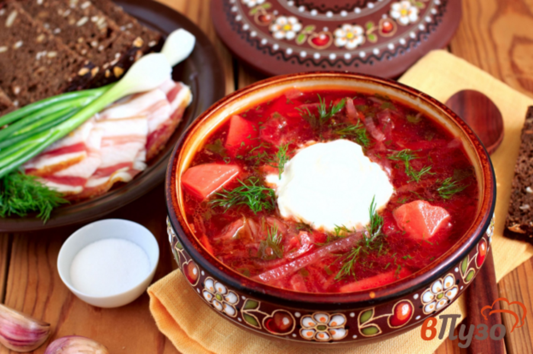

Інгредієнти: для бульйону: вода - 1,5–2 л.; свинина або яловичина на кістці - 400 г. Для засмажки: буряк - 2 шт. (невеликі); морква - 1 шт.; цибуля - 3 шт. (середні); томатна паста - 2 ст. л.; соняшникова олія - 4-5 ст. л.; лимонна кислота - щіпка. Для борщу: капуста білокачанна свіжа - 300 г; картопля - 4 шт. (середні); сіль, лавровий лист, зелень - за смаком. Для подачі: сметана - 1 ст. л. (в кожну тарілку); зелень. 
Приготування: Варимо бульйон - візьміть 3-літрову каструлю. Налийте в неї 1,5–2 літра води, покладіть м'ясо. Поставте на середній вогонь. Слідкуйте за бульйоном, перед закипанням зніміть піну. Бульйон буде смачнішим, якщо використовувати саме м'ясо на кості. Коли закипить, накрийте каструлю кришкою і варіть на повільному вогні годину-півтори.
Збираємо борщ - коли бульйон звариться, вийміть з нього м'ясо. Поки м'ясо остигає, киньте в бульйон нашатковану капусту. Через 5-10 хвилин додайте нарізану соломкою картоплю. Поки вариться картопля, відокремте м'ясо від кістки і наріжте кубиками. Поверніть м'ясо в суп. Посоліть за смаком. Додати засмажку. Перемішайте. Додайте лавровий лист і дрібно порізану зелень. Накрийте каструлю кришкою і варіть ще 5-7 хвилин. Борщ готовий.
Подача на стіл - борщ можна їсти відразу після приготування. Але, як правило, на наступний день він ще смачніший. Розлийте борщ по глибоких тарілках. Додайте сметану, свіжу зелень, чорний мелений перець (якщо любите погостріше) і часточку лимона (якщо хочете кисліший). Їдять борщ з житнім хлібом або здобними булочками, натертими часником.